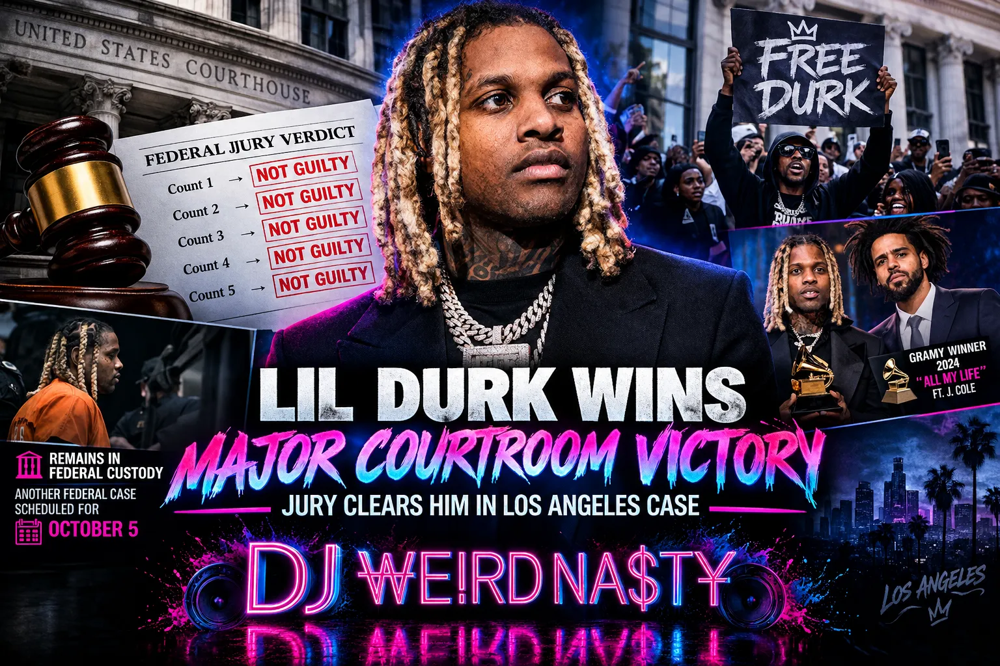

Lil Durk Wins Major Courtroom Victory as Jury Clears Him in Los Angeles Case
Music | Legal
Published: September 13, 2026

By DJWEIRDNASTY News
LOS ANGELES — Lil Durk walked away from one of his biggest legal battles with a major victory Friday after a federal jury found the rapper not guilty on every charge in a Los Angeles murder-for-hire prosecution.
The decision came after jurors spent three days reviewing the evidence surrounding a deadly 2022 shooting that prosecutors connected to an alleged attempt to target Atlanta rapper Quando Rondo.
Durk, whose legal name is Durk Banks, had faced five federal charges stemming from the investigation. The jury ultimately rejected the government’s case against him.
A Case Connected to a Deadly 2022 Shooting
The prosecution centered on an August 2022 shooting in the Los Angeles area.
According to the government’s case, the alleged objective was to attack Quando Rondo, following the 2020 death of Chicago rapper King Von, a close friend and associate of Durk.
The shooting, however, resulted in the death of Rondo’s cousin, Saviay’a Robinson, who was 24 years old.
Prosecutors argued that Durk played a role in arranging and financing the alleged operation. His defense team disputed that account and maintained that the rapper was not responsible for organizing the attack.
Defense Challenges Government’s Case
Durk’s attorneys argued that the prosecution had failed to establish that he directed the shooting.
The defense pointed toward former personal assistant Kavon Grant, arguing that Grant was involved in arranging the attempted attack and that Durk was wrongly tied to the plan.
After hearing testimony and arguments from both sides, jurors found Durk not guilty on all five counts presented in the trial.
Co-defendants Deandre Dontrell Wilson and David Brian Lindsey did not receive the same outcome. The two men were convicted on certain stalking and conspiracy charges but were acquitted of the murder-for-hire allegations.
Acquittal Does Not Mean Immediate Release
The courtroom victory does not mean Durk is heading home yet.
The rapper remains in federal custody because prosecutors have another case pending against him. A separate trial involving racketeering and firearms-related allegations is scheduled for October 5.
Those allegations were separated from the charges decided by the Los Angeles jury, leaving Durk with another legal battle ahead.
Durk has been held in federal custody since October 2024.
Supporters Celebrate Outside Court
Following the verdict, supporters gathered outside the courthouse to celebrate the rapper’s acquittal.
Durk’s father, Dontay Banks Sr., also spoke publicly after the decision and described the family’s reaction as one of overwhelming happiness. The verdict was reportedly emotional for Durk and his relatives inside the courtroom as the individual not-guilty findings were announced.
Defense attorney Drew Findling said the legal team’s attention would now shift toward the remaining case and the effort to have Durk released.
What’s Next for Lil Durk?
Friday’s decision removes the murder-for-hire prosecution from Durk’s immediate legal challenges, but his federal case is not finished.
The October proceeding could determine the next major chapter in the rapper’s ongoing legal situation.
For now, Durk remains behind bars despite being acquitted in the Los Angeles trial.
The Chicago rapper, who won a Grammy in 2024 for his collaboration with J. Cole on “All My Life,” will have to return to federal court next month as he continues fighting the remaining allegations.